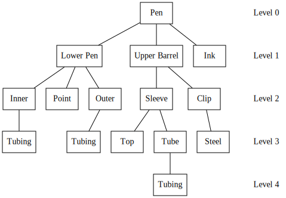

Bills of Material
In manufacturing, a bill of materials (BOM) defines all of the items required to produce a good. Often times this consists of raw materials (e.g. steel, aluminum) that are transformed or other components that are assembled to make the finished product. It may also contain ancillary items used during manufacturing, such as tooling or consumable chemicals.

Figure 1: Hypothetical multi-level bill of materials for a pen. (Lunn and Neff 1992)
Data Structures
Looking at the bill of materials depiction above, it is obvious that a BOM is really just a tree whose nodes are components (or subassemblies) and edges indicate a component’s belonging to its parent’s BOM. The quantity of a component in a parent’s BOM would also be indicated by an edge, as it is a property of the relationship between the parent and component.
Most material requirements planning (MRP) systems persist data using a typical relational database which stores information in a tabular fashion. Thus, the information encoded in the BOM tree structure must be transformed to fit within a table structure. This is typically done using an adjacency list which may be easily encoded as a table, with 1 row per relationship. The table below represents the pen bill of materials as it may appear in a database.
SELECT * FROM bom
| Component | Parent | Quantity |
|---|---|---|
| Pen | 1.0 | |
| Lower Pen | Pen | 1.0 |
| Upper Barrel | Pen | 1.0 |
| Ink | Pen | 1.0 |
| Inner | Lower Pen | 2.0 |
| Point | Lower Pen | 1.0 |
| Outer | Lower Pen | 2.0 |
| Sleeve | Upper Barrel | 1.0 |
| Clip | Upper Barrel | 2.0 |
| Tubing | Inner | 5.0 |
| Tubing | Outer | 3.0 |
| Top | Sleeve | 1.0 |
| Tube | Sleeve | 1.0 |
| Steel | Clip | 4.0 |
| Tubing | Tube | 2.0 |
Applications
With the BOM set up as above, there are some interesting questions we can answer with SQL queries.
Finding Components of an (Sub-)Assembly
Finding all components that comprise a particular assembly’s bill of material is a common MRP question. Obtaining a complete BOM requires finding the immediate children of the assembly, followed by children of the children, and so forth. This is complicated by the fact that we generally do not know the depth of a particular BOM.
The solution is to recursively find children of a component until we’ve reached a component that has no children (a leaf node in tree parlance). Algorithmically, this is referred to as a breadth (BFS) or depth-first search (DFS), depending on the order in which results are reported.
Most database flavors implement this using a recursive common table expression (CTE). Using our Pen bill of materials example, the below SQL query is how a recursive CTE would be implemented in SQLite to find all components of the Upper Barrel subassembly.
-- A depth-first search of the Upper Barrel subassembly WITH RECURSIVE recursive_bom(Component, Level) AS ( -- The root of the tree, i.e. the component whose BOM we want VALUES('Upper Barrel', 0) UNION ALL SELECT bom.Component, recursive_bom.level + 1 FROM bom JOIN recursive_bom ON bom.Parent = recursive_bom.Component ORDER BY recursive_bom.level + 1 DESC ) -- Add leading periods to help visualize bom depth SELECT level, printf('%.*c', level * 3, '.') || Component AS Component FROM recursive_bom
| Level | Component |
|---|---|
| 0 | .Upper Barrel |
| 1 | …Clip |
| 2 | ……Steel |
| 1 | …Sleeve |
| 2 | ……Top |
| 2 | ……Tube |
| 3 | ………Tubing |
Finding Total Quantities Required for All Components
Another important question is how many of each component is required to build a complete assembly. For example, looking at the BOM graph, it can be seen that tubing is required in multiple subassemblies, namely the Inner, Outer, and Tube. To build a complete pen, we would want to know the total amount of tubing required across all components, regardless of bom depth.
Again a recursive query is used, with the added complexity of accumulating all
quantities for identical components along the way. Accumulating component
quantities is accomplished by the added sum() and corresponding GROUP BY
clause in the sql query.
WITH RECURSIVE recursive_bom(Component, Quantity) AS ( -- The root of the tree, i.e. the component whose BOM we want VALUES('Pen', 1) UNION ALL SELECT bom.Component, bom.Quantity * recursive_bom.Quantity FROM bom JOIN recursive_bom ON bom.Parent = recursive_bom.Component ) SELECT Component, sum(Quantity) AS [Total Qty Required] FROM recursive_bom GROUP BY Component
| Component | Total Qty Required |
|---|---|
| Clip | 2.0 |
| Ink | 1.0 |
| Inner | 2.0 |
| Lower Pen | 1.0 |
| Outer | 2.0 |
| Pen | 1 |
| Point | 1.0 |
| Sleeve | 1.0 |
| Steel | 8.0 |
| Top | 1.0 |
| Tube | 1.0 |
| Tubing | 18.0 |
| Upper Barrel | 1.0 |
Thus, in order to build 1 Pen assembly, a total of 18 Tubing is required. To understand this, we can examine all components that require Tubing in their BOM.
SELECT * FROM bom WHERE Component IN ('Tubing')
| Component | Parent | Quantity |
|---|---|---|
| Tubing | Inner | 5.0 |
| Tubing | Outer | 3.0 |
| Tubing | Tube | 2.0 |
Tracing the ancestry of each parent all the way to the top level Pen:
- Inner 5 x 2 x 1 = 10 Tubing
- 5 Tubing is required for each Inner subassembly.
- 2 Inners are required for each Lower Pen.
- 1 Lower Pen is required for each Pen.
- Outer 3 x 2 x 1 = 6 Tubing)
- 3 Tubing is required for each Outer subassembly.
- 2 Outers are required for each Lower Pen.
- 1 Lower Pen is required for each Pen.
- Tube 2 x 1 x 1 x 1 = 2 Tubing
- 2 Tubing is required for each Tube.
- 1 Tube is required for each Sleeve.
- 1 Sleeve is required for each Upper Barrel.
- 1 Upper Barrel is required for each Pen.
- Grand total of 18 Tubing is required per Pen assembly.